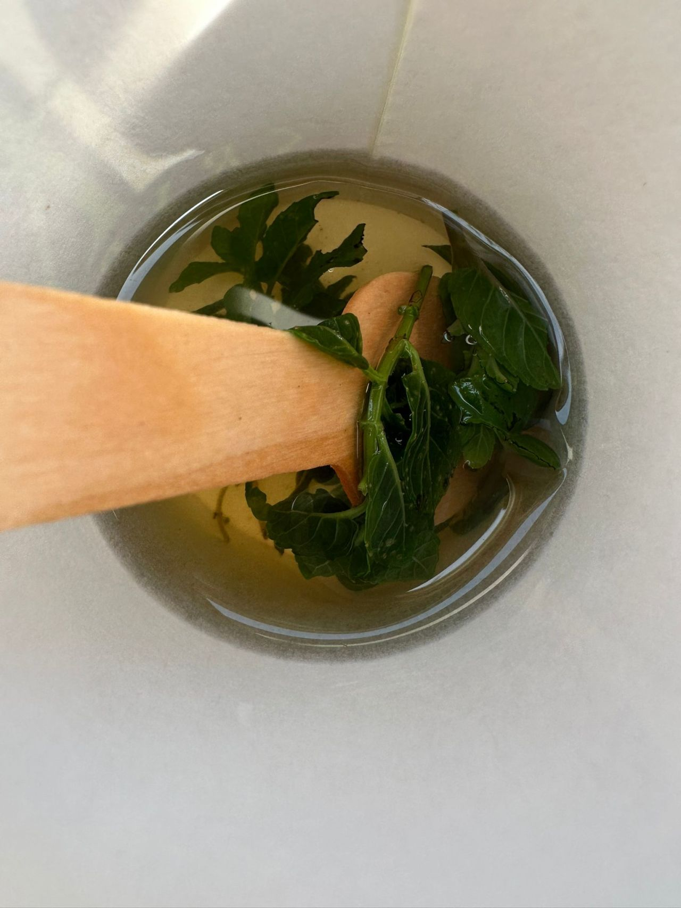

בקורס ניהול קיבלנו משימה: "צאו החוצה וצלמו טבע שמשקף את סגנון ניהול המנהיגות שלכם...".
פורסם במקור ב LinkedIn
בקורס ניהול קיבלנו משימה: "צאו החוצה וצלמו טבע שמשקף את סגנון ניהול המנהיגות שלכם...".
אותי זה לקח לכיוון קצת שונה - לא תמונת טבע קלאסית, אלא רגע יומיומי פשוט.
זה מה שיצא מתוך המשימה:
סגנון הניהול שלי - דרך כוס תה נענע
קטפתי עלי נענע טריים, רציתי לפנק את ה-HR שלי. מחווה קטנה, תשומת לב. אבל כשהגעתי אליה, היא כבר שתתה קפה. 🤦♂️
מה עושים?
יכולתי להתאכזב, לזרוק את העלים ולהמשיך הלאה. אבל במקום זה, הכנתי לעצמי תה.
וזה בדיוק איך שאני רואה ניהול:
• יוזמה עם גמישות – הייתה לי כוונה ברורה, אבל המציאות השתנתה. מנהיגות טובה יודעת להסתגל, לשנות כיוון בלי לאבד את המטרה האמיתית – לייצר ערך.
• תשומת לב לפרטים – כמו שבחרתי את העלים בקפידה, אני מאמין שהפרטים הקטנים בניהול הם אלה שעושים את ההבדל – להבין אנשים, לראות אותם, להיות שם ברגע הנכון.
• פתרונות במקום אכזבות – לא הכול מצליח בדיוק כמו שתכננו. במקום להתעכב על מה שלא קרה, אני מחפש מה כן אפשר לעשות עם מה שיש.
• למצוא ערך גם כשלא הולך לפי התוכנית – קטפתי עלים למישהו אחר, בסוף נהניתי מהם בעצמי. בניהול, השקעה לא תמיד חוזרת בדיוק איך שציפית, אבל היא אף פעם לא מתבזבזת.
• שירותיות אמיתית בלי אגו – לא באתי בשביל עצמי, אבל לא נתתי לזה להפוך לכישלון. אני מאמין שמנהיג אמיתי יודע לתת, גם כשזה לא תמיד משתלם מיידית.
בסוף, ניהול הוא כמו כוס תה נענע -
כוונה טובה, הסתגלות למציאות, ומציאת הדרך להוציא מהסיטואציה את המיטב. 🍵
--
בהקדשה ל Hen Perla Kleiner
ואתם, איך אתם מתמודדים עם רגעים שבהם התוכניות שלכם משתנות?
